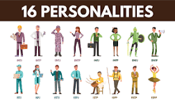
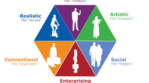

Myers-Briggs Type Indicator (MBTI)
The Myers-Briggs Type Indicator (MBTI) is a personality assessment that helps you understand your preferences and how they relate to different career paths.
Learn MoreStrengthsFinder
StrengthsFinder identifies your top strengths and suggests careers where these strengths can be most effectively utilized.
Learn MoreHolland Code (RIASEC) Test
The Holland Code (RIASEC) test helps identify career paths based on your interests and personality types.
Learn More2. Career Exploration Websites
O*NET Online
O*NET Online provides detailed descriptions of different occupations, including the skills, knowledge, and abilities required.
Visit O*NET OnlineCareerOneStop
CareerOneStop offers resources for career exploration, including job search tools, career assessments, and information about different occupations.
Visit CareerOneStopLinkedIn Career Explorer
LinkedIn Career Explorer helps you explore career paths and find potential career matches based on your skills and interests.
Visit LinkedIn Career Explorer